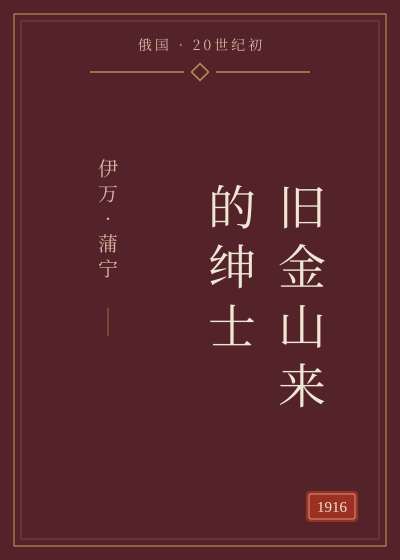

旧金山来的绅士
一、基本信息
| 作者 | 伊万·蒲宁 |
|---|---|
| 成书/出版 | 1916年（Britannica：Gospodin iz San-Frantsisko (1916; The Gentleman from San Francisco)） Ivan Bunin — Encyclopaedia Britannica（百科全书） |
| 国别/地区 | 俄国 |
| 时代 | 近代 · 20世纪初 |
| 体裁 | 短篇小说 |
| 语言 | 俄语 |
《旧金山来的绅士》覆灭结构图（主题·结构图）
二、创作背景
Britannica（B284）：'Gospodin iz San-Frantsisko (1916; The Gentleman from San Francisco) show Bunin's penchant for extreme precision of language'（展示蒲宁对语言极端精确的偏好——B284）。
蒲宁（B284）：1933年诺奖——'the first Russian to receive the Nobel Prize for Literature'；'one of the finest of Russian stylists'。
三、内容脉络
'旧金山来的绅士'：一位无名富人携家乘'阿特兰蒂克'号游轮环游——死于卡普里，被装回运棺的汽水箱（通说待核）。
四、主要人物表
| 人物 | 身份 | 说明 |
|---|---|---|
| 绅士 | 无名富人 | 无姓名（通说待核） |
五、主题与艺术特点
- '阿特兰蒂克'（Atlantic/Atlantis）——文明的自负与覆灭（通说待核）。
- 死亡面前的社会等级滑稽（通说）。
- 语言的极端精确（B284）。
六、影响与评论
- Britannica：'show Bunin's penchant for extreme precision of language'（B284）。
Ivan Bunin — Encyclopaedia Britannica（百科全书） - Britannica：1933年诺奖——首位俄国获奖者（B284 作者级）。
Ivan Bunin — Encyclopaedia Britannica（百科全书）
七、阅读建议
难点
- 游轮社会的等级细节。
- 象征命名（阿特兰蒂克号）。
- 《旧金山来的绅士》（收于《蒲宁文集》，通说待核）。
- 俄文原版（公有领域）。
蒲宁短篇首选。
八、待核实
- 1916年发表（《 思 想 》？——不：俄国刊物说）核对。
- 绅士无名的处理待核。
- 阿特兰蒂克号象征待核。
本页主要来源
伊万·蒲宁的其他收录作品：旧金山来的绅士